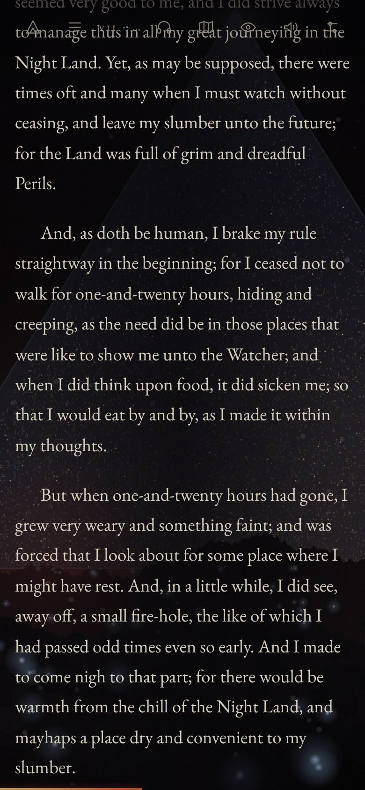

I
A living land behind the text
Every chapter has its own painted scene, drawn from the book's own descriptions: the Redoubt and its Circle, the plain of fire-pits, the gorge, the sea, the House of Silence. Fire flickers, ash drifts, and the land answers what you read.
